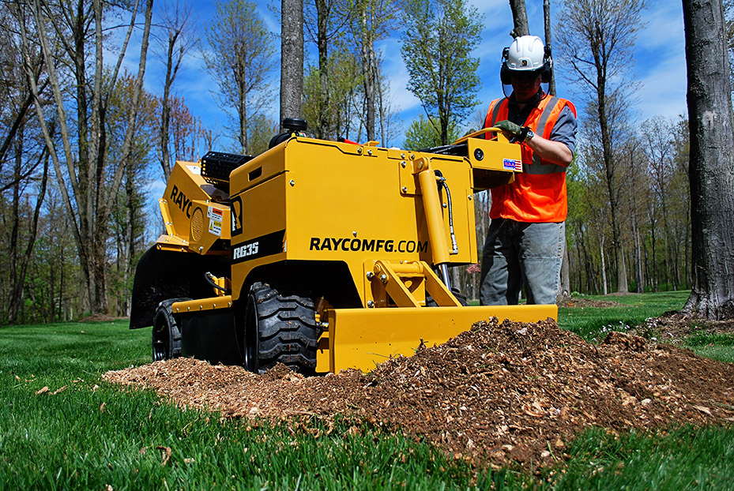

Stump Grinding
in Shaker Heights, OH
Fast, Affordable Stump Removal
Stump Grinding for
Shaker Heights Homeowners
Shaker Heights is one of Cleveland's most distinguished inner-ring suburbs, renowned for its beautiful tree-lined boulevards, historic homes, and carefully maintained streetscapes. From the grand properties along South Park Boulevard to the charming neighborhoods near Shaker Square, mature trees are central to the community's identity.
When one of these stately trees must come down — whether from age, disease, or storm damage — the stump left behind detracts from the very aesthetic that makes Shaker Heights special. We provide professional stump grinding throughout Shaker Heights, treating every property with the care it deserves.
Preserving Shaker's Tree-Lined Character
Shaker Heights is known for its urban canopy. When a tree is removed, many homeowners want to replant in the same spot. Stump grinding clears the way, removing the old stump below grade so a new tree can be planted. We leave the area clean and ready for your landscaper or arborist.
Historic Property Expertise
Many Shaker Heights homes date to the early 1900s, with mature landscaping that has been developed over decades. We work carefully around established gardens, stone walls, historic walkways, and ornamental features. Our compact equipment fits through side yards without disturbing surrounding plantings.

Shaker Heights Stump Grinding FAQ
How much does stump grinding cost in Shaker Heights?
Most residential stumps in Shaker Heights range from $100–$400. Some of the larger, older trees in the area can produce stumps that are larger than average. Call (440) 429-4524 for a free estimate.
Can you work around my established landscaping?
Yes. We understand that Shaker Heights homeowners invest heavily in their landscaping. Our operators are experienced with working around gardens, walkways, and other features without causing damage.
Do I need to notify the city before grinding a stump?
For stumps on private property, no permit is typically required. For tree lawn stumps (between the sidewalk and street), check with the City of Shaker Heights first, as those may be city-managed.
How quickly can you schedule in Shaker Heights?
We work in the east side suburbs regularly. Most Shaker Heights jobs are scheduled within the same week. Call or text (440) 429-4524.
We Also Serve
Get a Free Quote
in Shaker Heights
Call or text anytime for a fast quote on stump grinding in Shaker Heights, OH. We respond quickly and can usually get to your job within the week.